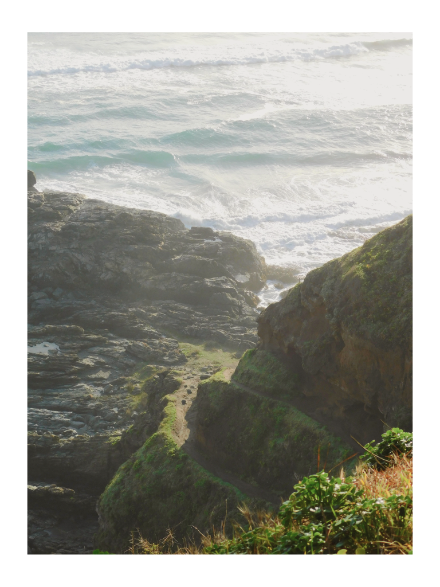
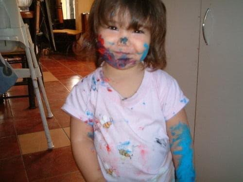

Sobre mí

Estudiante de diseño cursando tercer año
con mención en industrial y un año aprendiendo gráfico.
Conocimientos en:
Rhinoceros 3D
AutoCAD
InDesign
Figma
Estoy terminando el Diploma de Honor en Gestión de la Innovación.
He tomado ramos como Retail y visual merchandising,
Cerámica experiemntal
Color: manejo y aplicación en diseño
Fabricación digital
y más ramos y talleres tanto industriales como gráficos
Siempre me gustó todo lo relacionado a
crear,
pintar, dibujar
fotografía
música
viajes
experiencias
cositas dulces
piedras
gatitos y perros
estar con mi familia y amigas
las estrellas y atardeceres
querer
Dios, patria y galleta chokita.
C